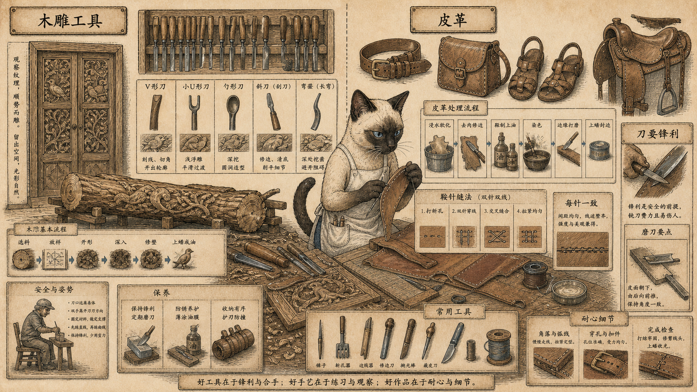
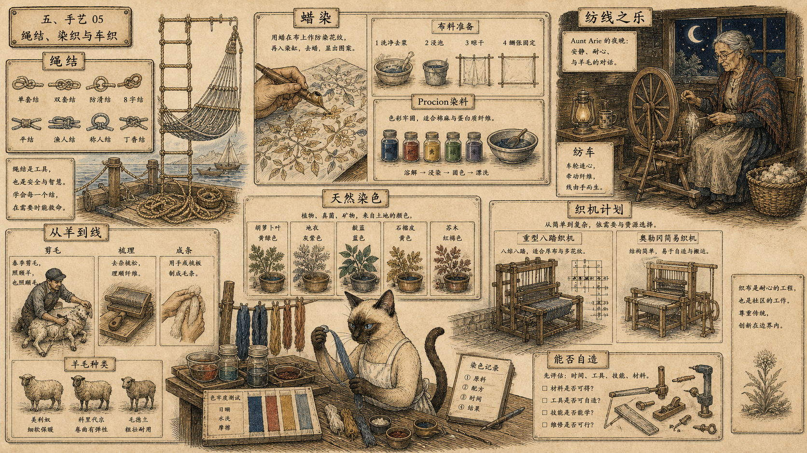
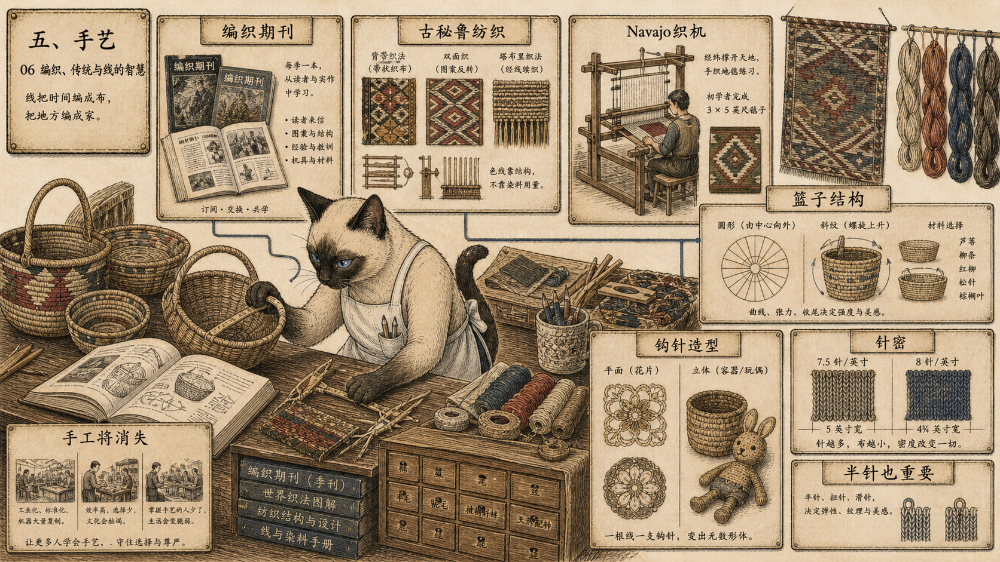
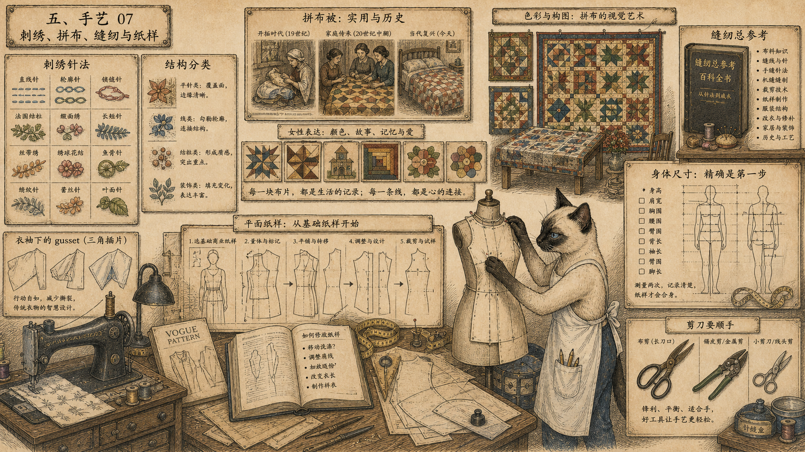

模块 01
找书、找传统、尊重边界
可靠资料本身就是工具；传统物件也不是随手可复制的装饰。
先看图：目录、纺织书店、北美原住民手艺手册、《狐火》和纺线老人被放在同一间资料室。进入手艺的第一步，是找到对的书和对的传统。
有趣的是：《北美印第安手艺》谨慎处理鼓、烟斗、面具等有精神意义的物件。若不了解它们的位置，复制可能把面具降成万圣节服装。
为什么重要：《全球概览》 这里不是把所有传统都拿来消费，而是在提醒：手艺既是技术，也是关系和责任。
手艺不是“漂亮手作”。它保存的是工业社会常常藏起来的知识：工具怎样锋利，皮革怎样受力，泥土怎样进火，线怎样有捻度，针密怎样改变衣服尺寸，传统物件为什么不能随便复制。
这一章可以按材料读，也可以按身体动作读：找资料、做工具、切、缝、捏、烧、染、织、量、改，最后把世界重新理解为可以被做出来的东西。
手艺的第一步不是买材料，而是找到能带你开始、练习并尊重传统边界的资料。
可靠资料本身就是工具；传统物件也不是随手可复制的装饰。
先看图：目录、纺织书店、北美原住民手艺手册、《狐火》和纺线老人被放在同一间资料室。进入手艺的第一步，是找到对的书和对的传统。
有趣的是：《北美印第安手艺》谨慎处理鼓、烟斗、面具等有精神意义的物件。若不了解它们的位置，复制可能把面具降成万圣节服装。
为什么重要：《全球概览》 这里不是把所有传统都拿来消费，而是在提醒：手艺既是技术，也是关系和责任。

一旦能做自己的工具，人就不必只能购买别人为别的目的设计的工具。
先看图：锻炉、铁砧、钻床、台钳、废钢、锉刀、螺丝刀、剪刀和凿子构成了一条学习路线。工具制作被称为最高的手艺之一。
有趣的是：威格斯在荷兰做学生时，第一年工坊时间都只学平锉，直到能达到机器般精度。锉刀常常能像砂轮一样有效，却更可控。
为什么重要：安全也是手艺的一部分。活火、锐利工具和分心不能共存；健全的工具制作者始终处在控制中。
木头、皮革、陶土、蜡、玻璃和珠子都不是被动材料。它们会用阻力、温度、湿度、裂纹和重量训练人的判断。

工具名不是术语负担，而是进入材料语言的钥匙。
先看图：V 形刀、小 U 形刀、弯凿、匙形圆凿、皮革刀、染色、边缘整理和鞍针缝法被放在同一张工作台上。木头和皮革都要求手稳定。
有趣的是：鞍针缝法最怕“不一致”。若第一针左针在前，后面每一针都要保持左针在前，否则缝线会粗糙不均。
为什么重要：好的教学常常来自朋友型工匠在每一步纠正你：再压重点，那只是表面抛光。手艺要靠细节和苦工进入。

火和热会让材料显形，也会把人的错误留下来。
先看图：指痕陶壶、锯末窑、釉配方、蜡烛模具、回收珠宝、珠子、彩色玻璃和吹玻璃的湿木块围成一个热工作室。
有趣的是：贝伦森喜欢壶留下手指痕迹，因为那是你的手。吹玻璃时，湿木块不直接接触玻璃，中间有一层过热蒸汽，太干就会粘住并留下气泡。
为什么重要：这些材料不允许只凭想象。冷却太快、釉配方不准、木块太干，都会在成品上留下证据。
纺线、染色、编织、篮编、钩针、针织、刺绣和制版都在训练同一件事：材料和身体尺寸最终会给出答案。

线不是抽象线条，它有捻度、张力、颜色、来源和设备。
先看图：海事绳结、蜡染、普施安染料、纺车、剪羊毛、天然植物染色和织机计划被放在一个纺织工作室里。
有趣的是：阿丽姨妈说自己爱极了纺线，爱把线带上去、让轮子转。莎拉·卡恩则在煮胡萝卜叶染色时发现，自己以前竟没想到可以这样染。
为什么重要：《全球概览》 关心的不只是成品布，而是设备能否被人制造，染料是否耐洗，布料准备是否正确。

一根线、一根柳条、半针密度，都能改变最终形状。
先看图：古秘鲁纺织、纳瓦霍织机、篮子结构、钩针造型和针织样片被放在同一张纺织墙上。这里的复杂不是炫技，而是结构判断。
有趣的是：针织密度很残酷：30 英寸腰围，每英寸 7.5 针是 225 针，每英寸 8 针是 240 针，差出来就是两英寸。
为什么重要：篮编部分最清楚地讲出技术进步的损失：工业发展一来，手工篮编传统就会消失，使用篮子的感官愉悦也会失去。

针线不是家务残余，而是结构、颜色、身体尺寸和女性表达的历史。
先看图：刺绣针法按结构归组，拼布被作为视觉艺术被挂起，缝纫机旁是插片、商业纸样和个人基本纸样。
有趣的是：拼布、被缝和针线艺术曾长期是女性少数能创造性表达自己的途径。许多一两百年前被子里的色彩组合，早于现代艺术运动，却长期被忽视。
为什么重要：制版把身体带回纸面。所谓平面纸样法，是从已经适合个人身体的基本纸样出发，把它改成选定设计。